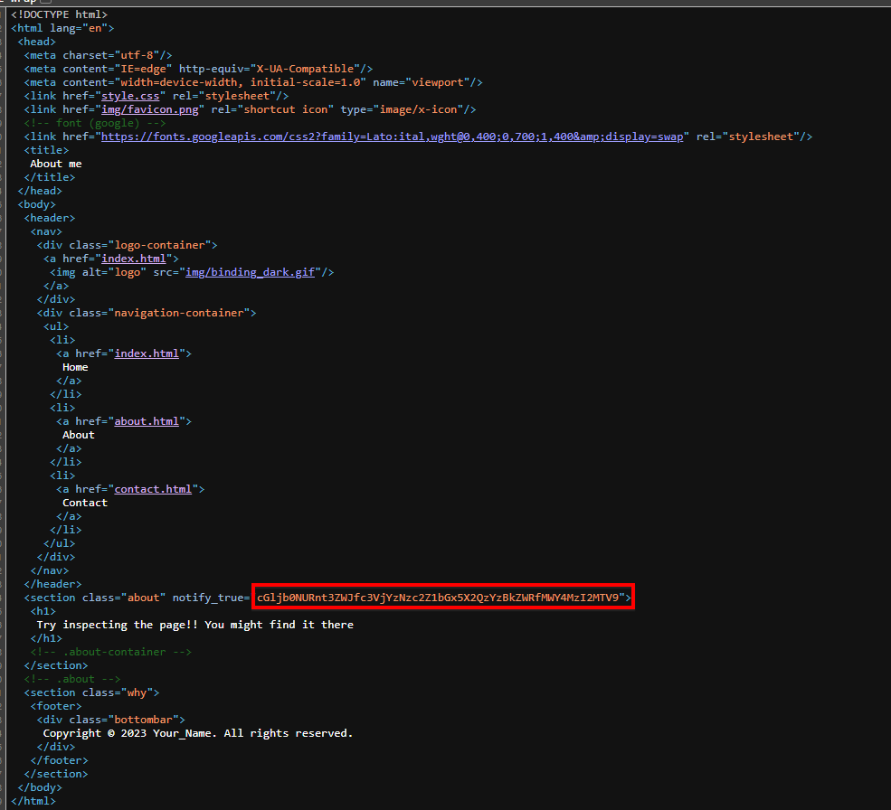
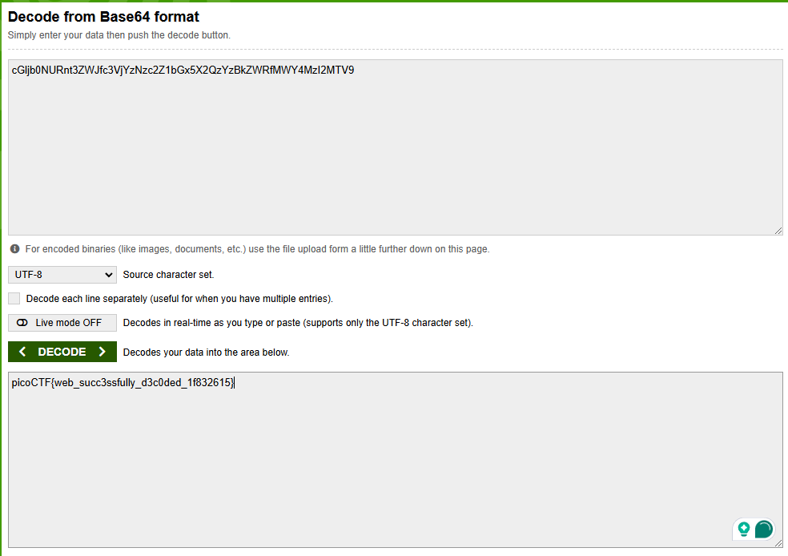

Challenge Overview: We will be tackling the PicoCTF WebDecode challenge
PicoCTF WebDecode LinkChallenge Description

After doing some navigating in the source code I was able to identify some code that appears to be base64 encoded
I take the code and throw it into a decoder which outputs the flag
Conclusion:
Although this was a simple challenge, if a project is rushed and sensitive data is encoded an adversary would be able to quickly identify it & gather that information. To mitigate this issue I would sanitize the sensitive information and discard it if unnecessary.
OWASP A02 Cryptographic Failures